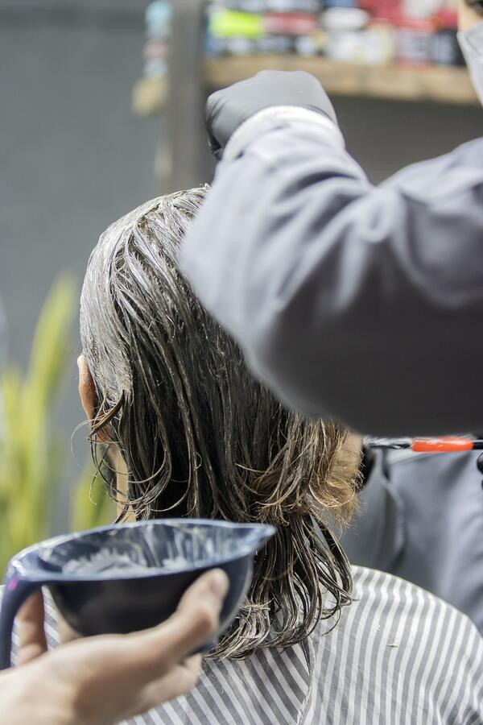
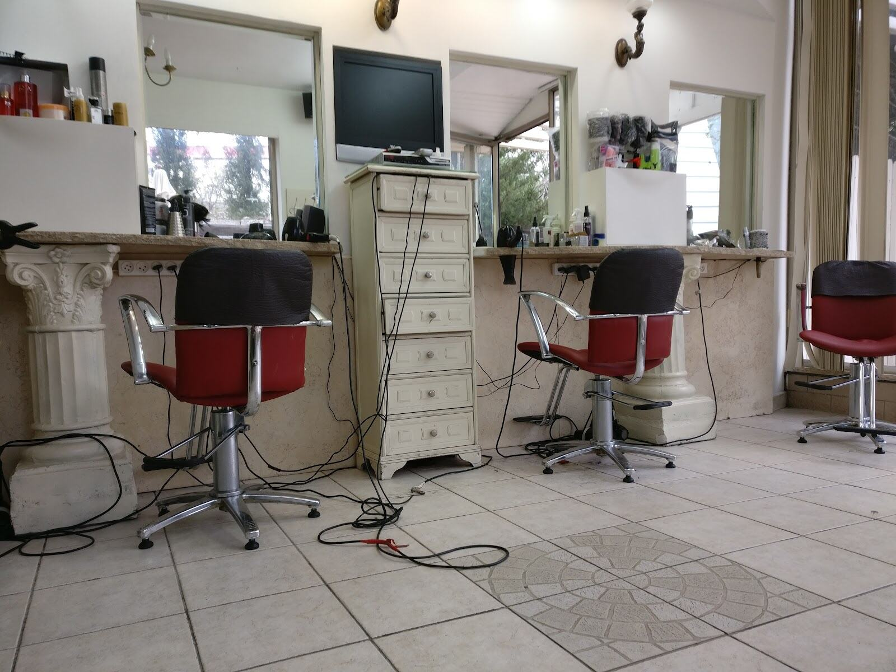
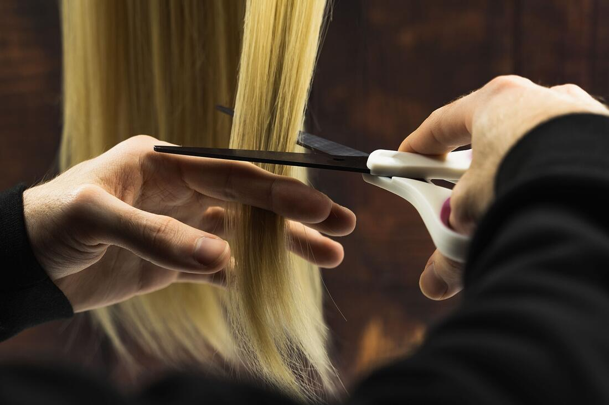

צבע שמוטי מכיןColour Moti mixes
הגוון נבנה בקערה, ליד הכיסא.The shade is built in the bowl, by the chair.
תמונה להמחשהIllustrative photoקונספט לדוגמה שנבנה עבור מוטי חזן · זה אינו האתר הרשמי של העסקA sample concept built for Moti Hazan · This is not the business’s official website

הספר של כל המשפחה.The whole family’s hairdresser.
מספרה לנשים ולגברים, העצמאות 1, קריית ביאליק.A hair salon for women and men, HaAtzmaut 1, Kiryat Bialik.
לנשים ולגברים, באותו סלון.For women and men, in the same salon.

הגוון נבנה בקערה, ליד הכיסא.The shade is built in the bowl, by the chair.
תמונה להמחשהIllustrative photo
ואם יש רעיון חדש, מדברים עליו.And if there’s a new idea, you talk it over.
תמונה להמחשהIllustrative photoמכונה ומספריים, בכיסא האדום.Clippers and scissors, in the red chair.
ספה אדומה ומבט לגינה.A red sofa and a view of the garden.
מסמנים מי מגיע ובאיזה יום, וההודעה למוטי מוכנה.Tap who’s coming and which day, and the message to Moti is ready.
אפשר ללחוץ שוב על בן או בת כדי להוסיף עוד.Tap a son or daughter again to add one more.
64 ביקורות בגוגל.64 reviews on Google.
״מקצועי מאוד, אדיב, הספר המשפחתי של המשפחה המורחבת שלנו כבר 20 שנה. אין כמוהו.״
“Very professional and kind, the family hairdresser of our extended family for 20 years now. There’s no one like him.”
״כאחת שביקור במספרה היה עונש עבורה, שתמיד לא מרוצה מהתוצאה, בחמש השנים האחרונות מגיעה למספרה של מוטי בהנאה, מסכימה לחידושים שמציע ותמיד יוצאת מרוצה…״
“As someone for whom a trip to the salon was a punishment, never happy with the result, for the last five years I’ve come to Moti’s salon with pleasure, said yes to the new things he suggests and always left happy…”
״מוטי חזן ספר מעולה ואדם מקסים עם נתינה ואהבה למקצוע. ישר כוח, ממליצה מאוד.״
“Moti Hazan is an excellent hairdresser and a lovely person, generous and in love with his craft. Well done, highly recommended.”